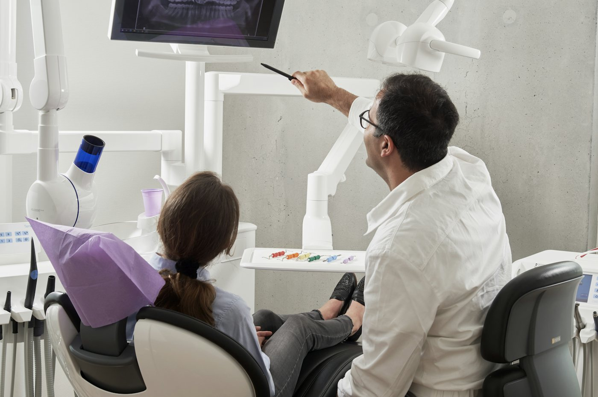
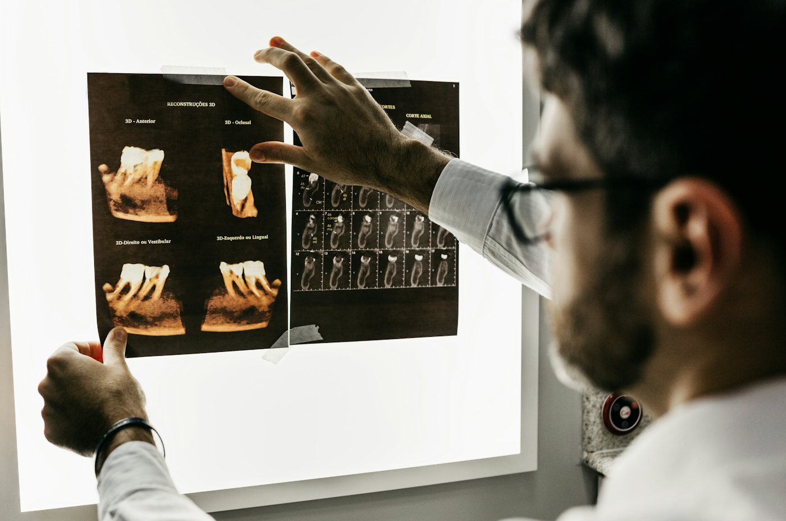

Consultas
- Consulta com clínico geralCom retorno em até 15 diasR$ 180
- Consulta com especialistaDermato, ortopedia ou cardiologiaR$ 260
- Avaliação odontológicaInclui radiografia panorâmicaR$ 150
- TeleconsultaRetornos e resultados de examesR$ 120
Moema · a 300 m do metrô · Desde 2008
Você sai da primeira consulta com o diagnóstico, as opções de tratamento, os prazos e os valores por escrito.



16anos cuidando do bairro
Todas no mesmo endereço, com prontuário único. Você não repete sua história a cada profissional.

Consulta de rotina, check-up anual, controle de pressão, diabetes e colesterol.
Limpeza, restaurações, canal, aparelho, implantes e clareamento.
Acne, manchas, queda de cabelo, mapeamento de pintas e pequenos procedimentos.

Dores na coluna, joelho e ombro, lesões esportivas e acompanhamento pós-cirúrgico.
Reabilitação, pilates clínico, RPG e drenagem, com avaliação postural.
Radiografia digital, ultrassom e eletrocardiograma, com laudo no mesmo dia.
Valores de referência para atendimento particular. Convênios aceitos: Amil, Bradesco, SulAmérica e Unimed.
Profissionais com especialização registrada no conselho. A direção clínica é das fundadoras.

Diretora clínica · CRO-SP 78.412
Especialista pela USP, com quinze anos dedicados à reabilitação oral.

Clínico geral · CRM-SP 132.550
Residência em Medicina de Família pela Unifesp. Atende adultos e idosos.

Dermatologia · CRM-SP 148.206
Título de especialista pela Sociedade Brasileira de Dermatologia.
Fugi de dentista por dez anos. Aqui me explicaram cada etapa, mostraram a radiografia na tela e respeitaram o meu tempo. Terminei o tratamento sem faltar a uma consulta.
Guardamos horários de encaixe todos os dias para urgências. Confirmamos pelo WhatsApp em até uma hora.